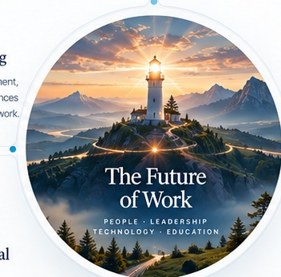

Meaningful Work & Employee Well-Being
Meaning, resilience, engagement, and the psychological experiences that help people sustain their work.
Scholarship & Projects
Research interests, publications, and projects examining people, organizations, leadership, and technology.
My research interests examine how people experience work and learning, how organizations support development, and how emerging technologies change leadership and institutional life.
Meaning, resilience, engagement, and the psychological experiences that help people sustain their work.
Leadership practices, learning climates, workforce development, and opportunities for growth.

The implications of artificial intelligence and workplace technology for employees, teams, and organizations.
Institutional effectiveness, student experience, international education, and organizational change in higher education.
Research & Scholarly Work
Journal articles, manuscripts under review, and conference contributions.
Daei Jafari, M. R., Aghaei, A., & Rashidi Rad, M. (2020). Existential humanistic therapy with couples and its effect on meaning of life and love attitudes. The American Journal of Family Therapy, 48(5), 530–545.
Daei Jafari, M. R., Aghaei, A., Shafti, S. A., & Atashpour, S. (2017). The effectiveness of existential psychotherapy based on Iranian culture on the quality of interpersonal relationships. Contemporary Psychology Journal, 12, 655–659.
Daei Jafari, M. R., Rashidi Rad, M., & Moradinia, A. (2017). Positive psychotherapy on the meaning of life and psychological capacities. Contemporary Psychology Journal.
Lolaki, M., Atashpour, S. H., Vaziri, S., & Daei Jafari, M. R. (2016). The moderating effect of positive humanistic virtues on psychological capital and couples’ marital adaptation: Provide a new conceptual model. International Journal of Educational and Psychological Researches, 2(2), 129.
Hajimirzalian, T., Abedi, M. R., Atashpour, S. H., & Daei Jafari, M. R. (2015). An assessment of the Lyubomirsky happiness teaching effectiveness in increasing happiness and life satisfaction in individuals attending Isfahan counseling centers. European Journal of Psychology and Educational Studies, 2(1), 7.
Mohammadi, E., Ghasemi, M. A., Daei Jafari, M. R., & Rashidi Rad, M. (2014). Evaluation the relation between self-esteem and social adjustment dimensions in high school female students of Iran (Case study: Isfahan, 2013–14 academic years). International Journal of Academic Research in Psychology, 1(2), 42–48.
Sadeghi, A., Daei Jafari, M. R., Rashidi Rad, M., & Ghasemi, M. A. (2014). The relationship of ethical leadership, happiness at work and sense of energy with organizational citizenship behaviors. Industrial and Organizational Psychology Studies, 1(2), 39–54.
Daei Jafari, M. R., Fabusoro, A. T., & Rashidi Rad, M. (2026). Cyberbullying and quiet quitting in startups: The mediating role of meaningful work and the moderating role of resilience [Manuscript under review].
Javadizadeh, B., Miles, J., Sherrell, J., & Daei Jafari, M. R. (2026). Helping the organization while hurting colleagues: The dark side of engaging in impression management motivated OCBs [Manuscript under review].
Daei Jafari, M. R., & Siddiq, K. (2026). AI and leadership in higher education: A transformative instrument or an emerging challenge? [Manuscript under review].
Daei Jafari, M. R., Rashidi Rad, M., & Siddiq, K. (2027, April 14–17). Meaningful work in the age of AI: The role of leadership and employee development [Poster presentation]. Society for Industrial and Organizational Psychology Annual Conference, National Harbor, MD, United States.
Daei Jafari, M. R., & Siddiq, K. (2027). An AI Tsurugi: New Instrument or Old Enemy? [Scholarly paper submission]. 2027 NASPA Annual Conference, Educational Session Proposals.
Daei Jafari, M. R., & Rashidi Rad, M. (2026). The hidden cost of cyberbullying in remote startup [Poster]. Society for Industrial and Organizational Psychology Annual Conference, New Orleans, LA, United States.
Atashpour, S. H., Amiry, R., & Daei Jafari, M. R. (2016). Examining the predictive role of cultural intelligence in social adaptation [Conference presentation]. Third National Congress of Social Psychology of Iran, 2016.
Rashidi Rad, M., & Daei Jafari, M. R. (2015). The role of positive psychological capital in prospectively predicting Oxford happiness, organizational citizenship behavior, and employee creativity. Second International Congress of Behavioral Sciences.
Daei Jafari, M. R., & Rashidi Rad, M. (2015). Positive organizational behavior-oriented. Second International Congress of Behavioral Sciences.
Atashpour, S., Rashidi Rad, M., & Daei Jafari, M. R. (2015). The relationship between ethical leadership, workplace happiness, and organizational citizenship behaviors. Fifth Congress of the Iranian Psychological Association.
Mosahebi, M., Daei Jafari, M. R., Rashidi Rad, M., & Ghasemi, M. A. (2015). Predicting vitality and dimensions of organizational citizenship behaviors based on ethical leadership. Fifth Congress of the Iranian Psychological Association.
Mahdizadegan, I., Daei Jafari, M. R., & Chitsaz, M. (2014). The relationship between organizational climate, employee happiness, and creativity. Fourth Congress of the Iranian Psychological Association.
Mosahebi, M., Daei Jafari, M. R., & Rashidi Rad, M. (2013). The relationship between workplace happiness, vitality, and organizational citizenship behaviors among nurses. National Health Conference.
Daei Jafari, M. R., & Mosahebi, M. (2012). Leader supporting role in increasing energy and creativity of university professors. Third National Congress on Industrial and Organizational Psychology.
Conference submissions are identified as submissions unless formal acceptance has been confirmed. Manuscript statuses should be updated when editorial decisions are received.